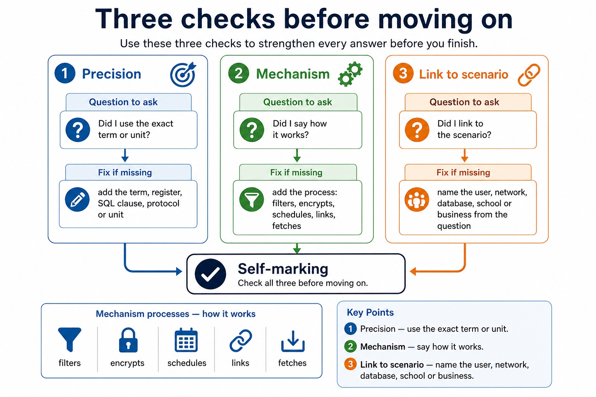

Lesson 096 | 45 minutes | Paper 1 Sections 1-8 | extended-response practice
Long answers do not need more words. They need more distinct marks.
This lesson practises 6-8 mark Paper 1 responses. You will plan before writing, separate points,
apply them to the scenario and add balanced judgement where the command word requires it. The focus
is not sounding impressive; it is making every sentence earn its seat.
Plansplit extended-response marks into distinct answer points
Developwrite mechanism, scenario consequence and limitation where needed
Evaluatebalance benefits, risks, safeguards and judgement in discuss/evaluate questions
Pointaccurate term or claimDevelopmechanism, cause, contrast or methodApplylink to scenario, stakeholder or dataJudgecondition, limitation or conclusion
A six-mark answer is not one large sentence wearing a smart jacket.
Why this matters
Extended questions reward coverage, precision and application. A fluent paragraph can still miss half the marks.
Common trap
Repeating the same idea with new adjectives is not a new point. The examiner has seen that trick before lunch.
Warm-up hook
Which answer structure fits?
Before writing, decide whether the question wants explanation, comparison, justification or evaluation.
Choose a card to identify the response structure.
Question map
Extended-response topics across Paper 1
Representation choicejustify storage, compression, image/sound settings and file-size trade-offsCommunicationcompare networks, models, protocols, media and cloud services in contextHardware/processorexplain component roles, FDE cycle, interrupts and performance factorsSystem softwarecompare translators, OS roles, utility software and development choicesSecurityexplain threats, controls, limitations and data integrity consequencesEthics/databasesevaluate impacts and design relational data/SQL solutions with justification
Extended-response topics across Paper 1
Extended-response topics across Paper 1: source-grounded visual explanation.
Lesson fact: Although..., however..., therefore only if...
Balance
Evaluation is not just "good and bad"
StakeholderName who is affected: student, staff, customer, business, public, developer.BenefitExplain the advantage and who receives it.ConcernExplain harm, risk, fairness, privacy, legal or environmental issue.SafeguardAdd condition, limit, policy, access control, transparency or testing.JudgementReach a conclusion using provided that, unless, only if or because.ScenarioUse the actual organisation, users and data in the question.
Evaluation is not just "good and bad"
Evaluation is not just "good and bad": source-grounded visual explanation.
Lesson fact: Stakeholder Name who is affected: student, staff, customer, business, public, developer.
Lesson fact: Benefit Explain the advantage and who receives it.
Lesson fact: Judgement Reach a conclusion using provided that, unless, only if or because.
Lesson fact: Scenario Use the actual organisation, users and data in the question.
Marking focus
How extended marks usually appear
Mark type
What earns it
What loses it
B mark
accurate named point or fact
vague wording such as "secure" or "efficient"
M mark
method, mechanism, comparison or logical development
keyword with no explanation
A mark
application, consequence, judgement or correct final result
generic answer that ignores the scenario
How extended marks usually appear

How extended marks usually appear: source-grounded visual explanation.
Lesson fact: Marking focus
Lesson fact: Mark type
Lesson fact: What earns it
Lesson fact: What loses it
Lesson fact: accurate named point or fact
Lesson fact: vague wording such as "secure" or "efficient"
Lesson fact: method, mechanism, comparison or logical development
Lesson fact: keyword with no explanation
Lesson fact: application, consequence, judgement or correct final result
Lesson fact: generic answer that ignores the scenario
Interactive response planner
Choose a structure before writing
Choose a question type to see a compact plan.
Choose a structure before writing
Choose a structure before writing: source-grounded visual explanation.
Lesson fact: Interactive response planner
Lesson fact: Question type
Lesson fact: Choose a question type to see a compact plan.
Interactive paragraph builder
Build one developed paragraph
Choose options, then build a paragraph.
Interactive mark-focus checker
What is missing from the answer?
Choose a weak answer to identify the missing mark focus.
Worked examples
Extended responses with marks annotated
Practice with instant checking
Extended-response planning vocabulary
Type concise planning terms. Use Show answer after committing to a response.
Mistake debugging
Repair weak extended answers
Exam-style questions
Original Cambridge-style extended-response set with expandable MS
These questions are designed for 6-8 mark practice. The MS rewards distinct points, development, scenario links and judgement.
Summary
Extended-response checklist
Plan marksBreak the answer into distinct points before writing.
DevelopAdd mechanism, contrast, scenario consequence or limitation.
JudgeFor evaluate/discuss, include benefit, concern, safeguard and conclusion.
Homework
Clear tasks for consolidation
Task 1: Plan two responsesChoose two 6-mark Paper 1 questions. Write only the plan: point, mechanism and scenario link for each mark pair.Task 2: Write one full answerAnswer one 8-mark ethics or security question in 10 minutes. Use benefit, concern, safeguard and judgement if relevant.Task 3: Mark and repairHighlight each distinct mark in your answer. Rewrite any repeated or vague sentence into a developed point.